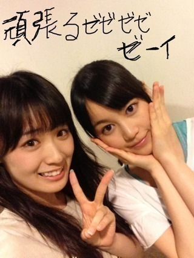

2013/0830Fri（´-`）.｡oO(か ずみん×212
バケラッタ！
みなさん、
沢山コメントありがとう(T_T)
ご心配おかけしました。
今昼公演が無事に終わりました！
昨日病院でできることは治療してきた
のですが、リハは全力で踊れなくて
正直、今日が心配でした...
でも！
ライブが始まった途端、
足のことなんて忘れるくらい
盛り上がれて(T_T)
よかったです！！！
心配おかけして、本当に
すみませんでした(´;ω;`)
来てくださったみなさん、
応援していてくれたみなさん、
本当にありがとうヽ(´TuT`*)ﾉ
夜公演でZEPPツアーも最後。
できること全部ぶつけてきます！！
それでは(*´ｰ`*人)

急ぎすぎて字が下手っ！笑
2013/08/30 17:30
コメント(559)
がんばって
バケラッタ！！昼公演お疲れ様です！！夜公演も頑張ってください！！！最後か〜…はやいですねぇ…。名古屋良かったです！家から応援してます笑
ラスト１公演頑張ってね！
無事に終われるように祈ってるよ(^^)
無事に終われるように祈ってるよ(^^)
お疲れ様♡
出れて良かったね！♡
かずみんおつかれ
お疲れ様！
昼のレポ見てるだけで涙が出てきそうになったよ(>_<)
あと7thシングル発売決定おめでとう
結構先だね（笑）
ほんとのラスト楽しいで頑張って
昼のレポ見てるだけで涙が出てきそうになったよ(>_<)
あと7thシングル発売決定おめでとう
結構先だね（笑）
ほんとのラスト楽しいで頑張って
夜公演も頑張ってね(*^▽^*)
足の具合を心配していました。。。
無事に昼公演を終えられたようで、
良かったです(^^)b
全国ツアーの最終公演も、悔いの
無いように、乃木坂ファミリー全員で
楽しんできてくださいm(_ _)m
無事に昼公演を終えられたようで、
良かったです(^^)b
全国ツアーの最終公演も、悔いの
無いように、乃木坂ファミリー全員で
楽しんできてくださいm(_ _)m
かずみんバケラッタ＊
足直ってきてるみたいでよかった！
無理しないで楽しんでね！
いいライブにしてくださーい！＊
ポジティブSAY!
足直ってきてるみたいでよかった！
無理しないで楽しんでね！
いいライブにしてくださーい！＊
ポジティブSAY!
昼公演お疲れー
もう、夜公演でラストやなー
早いなー
前、始まったと思ったらすぐ千秋楽やし！
次のライブはいつかなー(笑)
楽しみ( ^_^)/~~~
んじゃ、ばいちゃ(＾ｰ^)ノ
もう、夜公演でラストやなー
早いなー
前、始まったと思ったらすぐ千秋楽やし！
次のライブはいつかなー(笑)
楽しみ( ^_^)/~~~
んじゃ、ばいちゃ(＾ｰ^)ノ
かずみん\(//∇//)\
アメーバみるね(￣▽￣)
アメーバみるね(￣▽￣)
かずみん可愛いよ(｀・∀・´)
え、大丈夫ですか？
15のアメイジング＼(^o^)／
15のアメイジング＼(^o^)／
ずーさん、安心しました。
最後の、公演になりましたね。
おもいっきり、楽しんでくださいね。
最後の、公演になりましたね。
おもいっきり、楽しんでくださいね。
ラスト頑張ってね!!
応援してるゼゼゼゼーイ！！！
バイバーイ(^_^)ゞ
応援してるゼゼゼゼーイ！！！
バイバーイ(^_^)ゞ
どうも。
足のことを忘れるくらい大丈夫になったんですね。
良かったです。
でも、これからも絶対に無理はしないでください！
お願いします。
では。
足のことを忘れるくらい大丈夫になったんですね。
良かったです。
でも、これからも絶対に無理はしないでください！
お願いします。
では。
全国ツアーおつかれさまでした
Zepp大阪名古屋いったよっっ
足は大丈夫だった？
千秋楽おもいっきり暴れてきて
くださいっ！あ、無理は禁物！
夢で会おうぜアディオス
(*´ω｀*)(*´ω｀*)(*´ω｀*)
バケラッタ!!!!あっ、ども。うねですw
かずみんの足無事でよかったゼゼゼゼゼーイ!!!!＼(^o^)／
Zeppライブ今までお疲れさまでした！最後の公演も頑張って下さい!!!!
応援してます!!!!アメイジング＼(^o^)／
かずみんの足無事でよかったゼゼゼゼゼーイ!!!!＼(^o^)／
Zeppライブ今までお疲れさまでした！最後の公演も頑張って下さい!!!!
応援してます!!!!アメイジング＼(^o^)／
悔いが残らない様に頑張るのが一番だからね(*^▽^*)
名古屋でのかたつむりでは声の出る限りかずみんコールさせていただきました！
更新ありがとう♪
昼公演、かずみんが出てきて動いてるのを見た時に泣きそうになった(^^;;
無理しないでね！かずみんはかずみんらしくね!アメイジング＼(^o^)／
かずみさーん
バケラッタ!!
足のことホントに良かったー
全ツ最後のライブだからやっぱり思いっきりやりたいもんね!!
ラスト１公演頑張れー
応援してるよ
バケラッタ!!
足のことホントに良かったー
全ツ最後のライブだからやっぱり思いっきりやりたいもんね!!
ラスト１公演頑張れー
応援してるよ
かずみん、ファイトだよー
びっくりしたぜっ、一実せんせいっ！
更新ありがとうっ！
足の状態、そんなに悪くないみたいでホッとしました！
ラスト、夜公演、頑張れっ！
応援してます！
更新ありがとうっ！
足の状態、そんなに悪くないみたいでホッとしました！
ラスト、夜公演、頑張れっ！
応援してます！
かずみん、こんにちは！
たっくんです(*^^*)
28日名古屋参加したよー＼(^^)／
せっかちなかたつむりは
ほんとに聞きたくて
嬉しかったなー(*^-^*)
足大丈夫？
心配です
無理しないでね！！
東京ふぁいとっす！！！
たっくんです(*^^*)
28日名古屋参加したよー＼(^^)／
せっかちなかたつむりは
ほんとに聞きたくて
嬉しかったなー(*^-^*)
足大丈夫？
心配です
無理しないでね！！
東京ふぁいとっす！！！
かずみさん足大丈夫？？
かずみん心配してたよーーーㅠㅠㅠㅠㅠㅠ
最後1公演がんばってきてねー♡♡♡
応援してます*＼(･v･)/*
最後1公演がんばってきてねー♡♡♡
応援してます*＼(･v･)/*
夜もがんばれW(`0`)W
私もバイト頑張るゼゼゼゼゼーイ
楽しかったぜぜぜぜぜぜーーーーい！！（≧∇≦）
楽し過ぎて泣きそうになった！笑
夜も頑張って！
楽し過ぎて泣きそうになった！笑
夜も頑張って！
ちわ！たくとんです(^^)
Zepp東京お疲れさまでした！足の方もよくなったみたいで安心しました！
東京昼行きました！
元気に踊る姿を見れてよかった♪
それじゃまた！
Zepp東京お疲れさまでした！足の方もよくなったみたいで安心しました！
東京昼行きました！
元気に踊る姿を見れてよかった♪
それじゃまた！
頑張ってください（≧∇≦）
悔いの残らないように全力で(=ﾟωﾟ)ﾉ
悔いの残らないように全力で(=ﾟωﾟ)ﾉ
ガンバ！
バケラッタからのアメイジング＼(^o^)／
バケラッタからのアメイジング＼(^o^)／
よかった。大事にならず。
ラストがんばって。
ラストがんばって。
無理して悪化せんように！
バケラッタ(^.^)
昼公演お疲れ様♪
足のこんを忘れるくらい盛り上がれたならよかだね(^.^)
夜公演無理しないで頑張ってね！
てか、字全然下手じゃなくて可愛E字じゃん♪
昼公演お疲れ様♪
足のこんを忘れるくらい盛り上がれたならよかだね(^.^)
夜公演無理しないで頑張ってね！
てか、字全然下手じゃなくて可愛E字じゃん♪
一実さん、こんばんは！
よかった！ほんとによかった！安心しました！最後は32人＋13人、全員でがんばりましょうね！
いよいよほんとに最後の1公演が迫ってますね！まだまだ夏を終わらせないでください！夢を見させてください！
アメーバで緊急生中継見ようかなと思います！
最後の公演がんばってください！いってらっしゃい！
よかった！ほんとによかった！安心しました！最後は32人＋13人、全員でがんばりましょうね！
いよいよほんとに最後の1公演が迫ってますね！まだまだ夏を終わらせないでください！夢を見させてください！
アメーバで緊急生中継見ようかなと思います！
最後の公演がんばってください！いってらっしゃい！
かずみん！お疲れ様☆昼公園に参加したキングっちょまん。です♪( ´▽｀)
足の事を感じさせないようないつも通りのキレッキレのダンスだったよ*\(^o^)/*
夜は外れて行けないけど頑張ってねー◎
ライブちょーよかったよ★★
また行きます！ファイトー ♡ʕ(๑◕‿◕๑)ʔ♡
足の事を感じさせないようないつも通りのキレッキレのダンスだったよ*\(^o^)/*
夜は外れて行けないけど頑張ってねー◎
ライブちょーよかったよ★★
また行きます！ファイトー ♡ʕ(๑◕‿◕๑)ʔ♡
一実さぁーん(^o^)／
やっぱり一実さんはかっこいいo(^-^)o
痛みを忘れるぐらいの全力、素晴らしいです！
でも、一実さんの足の痛みが早く治るように祈ってますm(_ _)m
一実さんの頑張りを見てると、すごく幸せな気分になります。ライブ会場には行けないですが、会場にいるつもりで応援させていただきます！
ごきげんよう( ~っ~)/
やっぱり一実さんはかっこいいo(^-^)o
痛みを忘れるぐらいの全力、素晴らしいです！
でも、一実さんの足の痛みが早く治るように祈ってますm(_ _)m
一実さんの頑張りを見てると、すごく幸せな気分になります。ライブ会場には行けないですが、会場にいるつもりで応援させていただきます！
ごきげんよう( ~っ~)/
こんばんわ！
東京ライブ昼公演お疲れ様です！
足大丈夫そうでよかった！
でも無理しないでね…
最後の20:30～アメーバで生中継されるらしいので、愛知の地からPC越しですが応援してます！！
かずみん行くんだゼゼゼゼーイ！
東京ライブ昼公演お疲れ様です！
足大丈夫そうでよかった！
でも無理しないでね…
最後の20:30～アメーバで生中継されるらしいので、愛知の地からPC越しですが応援してます！！
かずみん行くんだゼゼゼゼーイ！
よかったー(ノω・｀)
いま、外に並んでます〜！
無理せず、楽しくパフォーマンスしてね！
無理せず、楽しくパフォーマンスしてね！
かずみん、こんにちは＼(^o^)／
じゅんこです。
かずみん、昼公演お疲れ様！
足の怪我、治って良かった！
でも無理しないでね！
夜公演も頑張ってね(*^-^*)
これからも頑張って下さい。
かずみん大好き♡♡
じゅんこです。
かずみん、昼公演お疲れ様！
足の怪我、治って良かった！
でも無理しないでね！
夜公演も頑張ってね(*^-^*)
これからも頑張って下さい。
かずみん大好き♡♡
足には気をつけてね(￣Д￣)ﾉ
ラスト嫌な思い出にならないように 笑
行けないけどラストめいいっっっぱいガンバって(((o(*ﾟ▽ﾟ*)o)))
ラスト嫌な思い出にならないように 笑
行けないけどラストめいいっっっぱいガンバって(((o(*ﾟ▽ﾟ*)o)))
♪♪かずみん♪♪
バケラッタ=^・^=
昼公演できたんだ!!
アメイジング＼(^o^)／
良かった(*^^*)
公演中はアドレナリン出て痛みが薄らいでるだけかもしれんから、今日のライブ終了後のケア丁寧にね
それと、『さんまのまんま』に出るんだね(*^^*)
楽しみo(^∇^o)(o^∇^)o
かずみさん♪
Zeppライブラスト！
ガジ頑張って(p^-^)p
またね(*・ｘ・)ノ~~~♪
バケラッタ=^・^=
昼公演できたんだ!!
アメイジング＼(^o^)／
良かった(*^^*)
公演中はアドレナリン出て痛みが薄らいでるだけかもしれんから、今日のライブ終了後のケア丁寧にね
それと、『さんまのまんま』に出るんだね(*^^*)
楽しみo(^∇^o)(o^∇^)o
かずみさん♪
Zeppライブラスト！
ガジ頑張って(p^-^)p
またね(*・ｘ・)ノ~~~♪
かずみんおつかれさま！
無事に昼公演終わったみたいで一安心やわ(^^)
夜公演は存分に楽しんでね(^o^)
無理はダメだよ(´･_･`)
バケラッタ*\(^o^)/*
無事に昼公演終わったみたいで一安心やわ(^^)
夜公演は存分に楽しんでね(^o^)
無理はダメだよ(´･_･`)
バケラッタ*\(^o^)/*
かずみん!!大丈夫かぁ～？
無理しなや～！
また９月の握手会までに治しや～(*^^*)
無理しなや～！
また９月の握手会までに治しや～(*^^*)


バケラッタ(๑-﹏-๑)